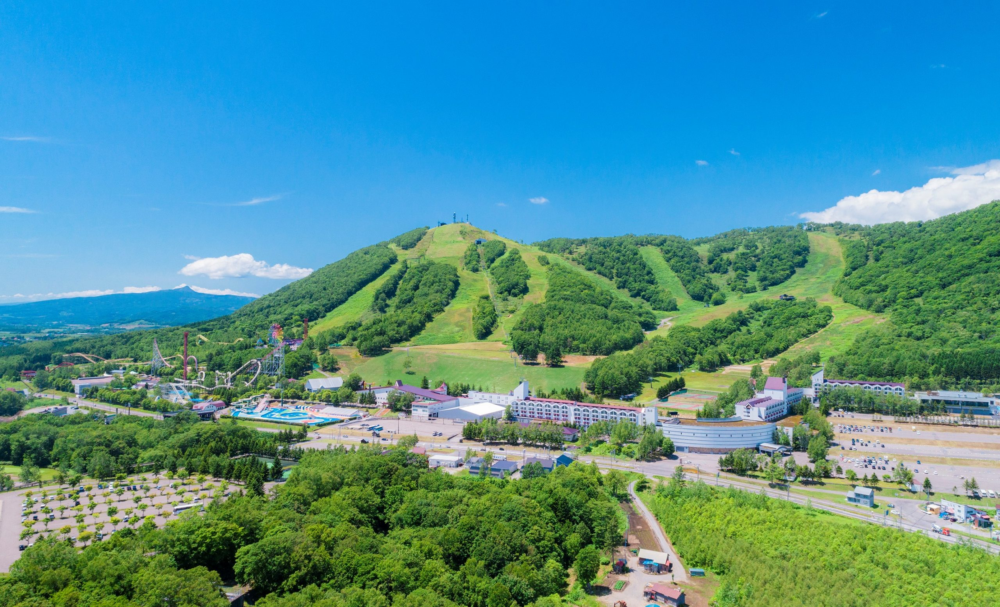
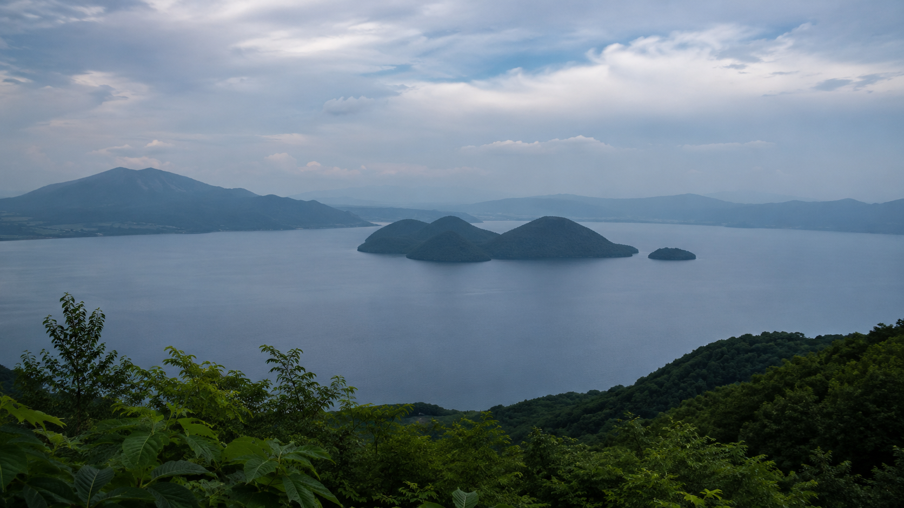
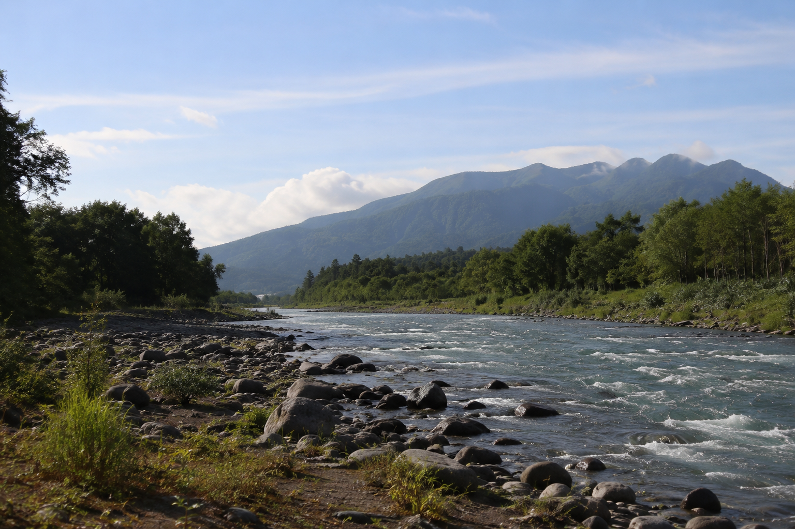
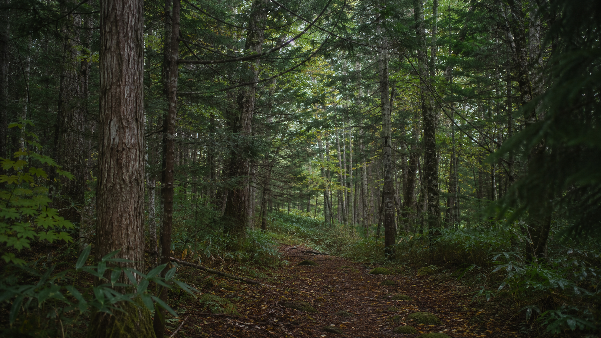
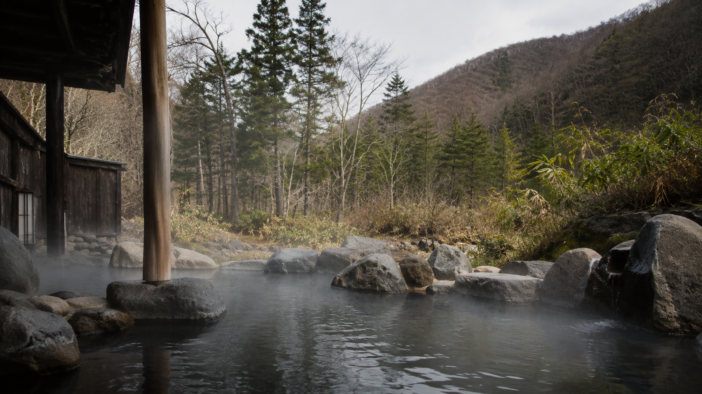

ニセコ・ルスツ・洞爺湖へ。北海道後志エリアの魅力を満喫。
SISUMO（喜茂別・蘭越）を拠点に、ニセコ・ルスツ・洞爺湖など主要観光地へアクセス可能です。

北海道最大級のオールシーズンリゾート。冬は3つの山を結ぶ広大なスキーエリア、夏は遊園地・ゴルフ・乗馬など家族で楽しめるアクティビティが充実。SISUMOから最も近い主要リゾートです。
世界的に知られるパウダースノーのスノーリゾート。アンヌプリ・グラン・ヒラフ・花園・東山など複数のエリアが集まり、国内外からスキーヤーが訪れます。夏はラフティングや自転車など大自然のアクティビティも豊富。

北海道を代表する湖と温泉の観光地。湖畔の温泉街、遊覧船、洞爺湖サミット記念館など見どころが多く、通年で楽しめます。夏は湖畔で毎夜花火大会が開催されます。

「蝦夷富士」とも呼ばれる標高1,898mの独立峰。SISUMO鈴川の宿の前から雄大な姿を眺められます。夏は登山コースも整備されており、山頂からの絶景を目指す登山客が多く訪れます。
後志エリアならではの体験を楽しもう

SISUMO鈴川から徒歩1分。ラフティングや釣り、川沿いの散策が楽しめます。

鈴川の宿の前に広がる山。冬は羊蹄山とともに雪景色が絶景。

SISUMO昆布から徒歩3分の老舗温泉。1958年創業、サウナ・レストラン併設。日帰り入浴10:00〜21:30。